1.iGEM Club – Founder
I established the first iGEM Club at YLHS to introduce students to synthetic and molecular biology, providing hands-on research experience and fostering collaboration.
- Recruited 35+ members and organized weekly workshops.
- Partnered with local community colleges to secure lab access.
- Created a platform for students to explore innovative biological research.
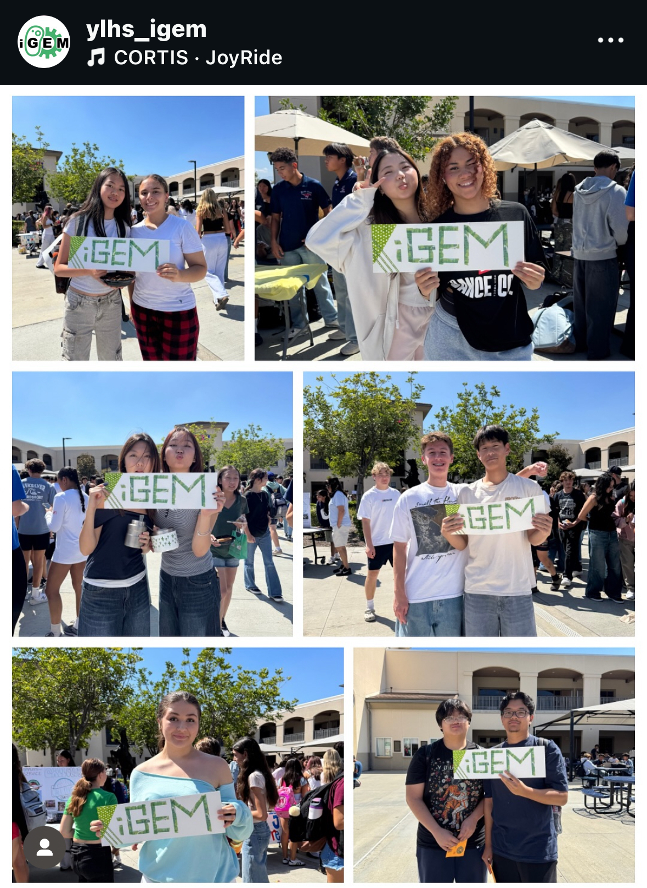
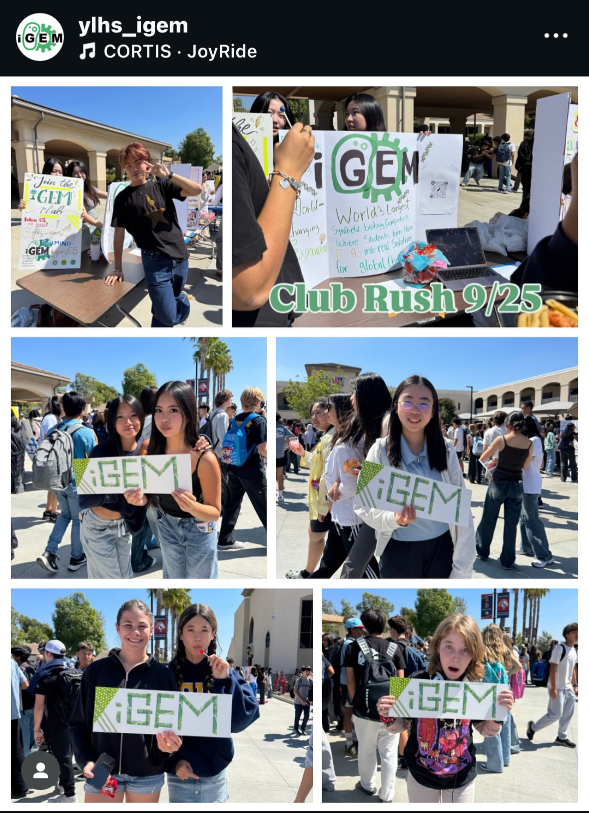
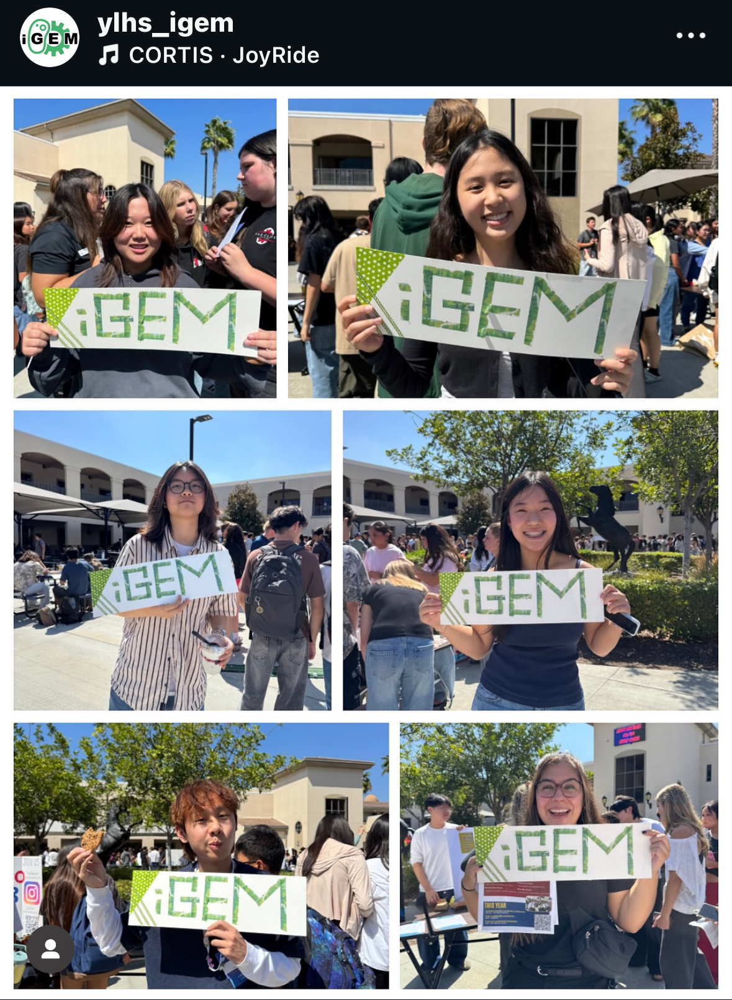
2.California Scholarship Federation (CSF) – Vice President
As Vice President, I coordinate school-wide volunteer initiatives, emphasizing service and community engagement.
- Organized beach cleanups and holiday card writing for faculty.
- Coordinated the creation of handmade donations for the local library.
- Learned how leadership can unite people around shared goals.
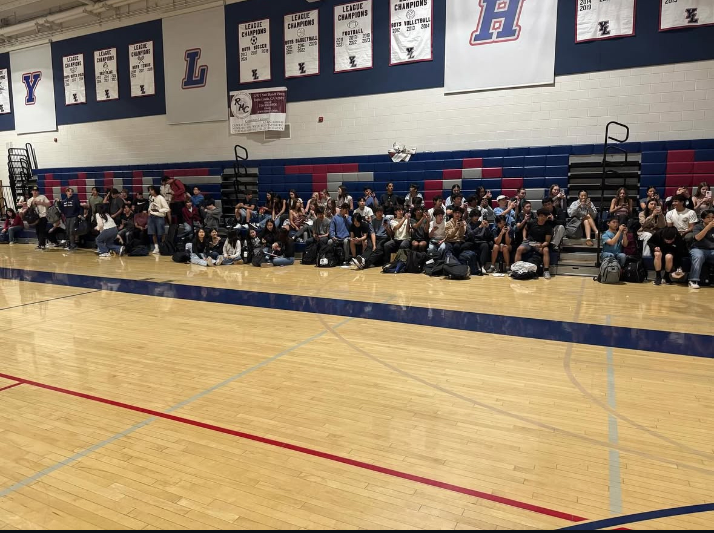
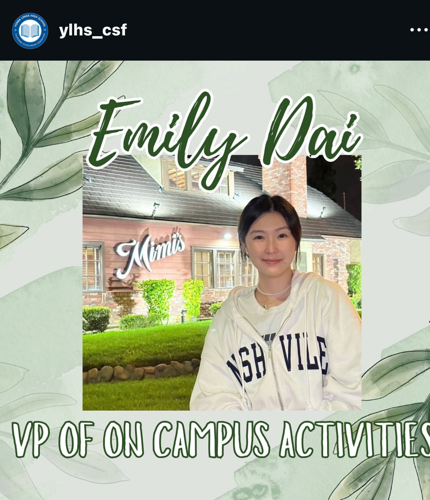
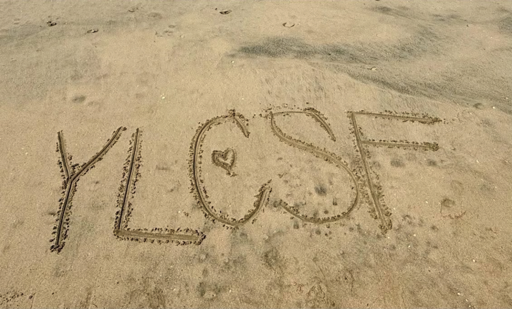

3.YLHS Pre-Med Club – Treasurer
I manage club finances, social media, and fundraising while participating in activities that raise awareness of personal health and disease prevention.
- Manage social media campaigns and create quarterly promotional posters.
- Attend biweekly meetings, assist with fundraising, and oversee club expenses.
- Participate in educational activities to learn about various diseases with club members.
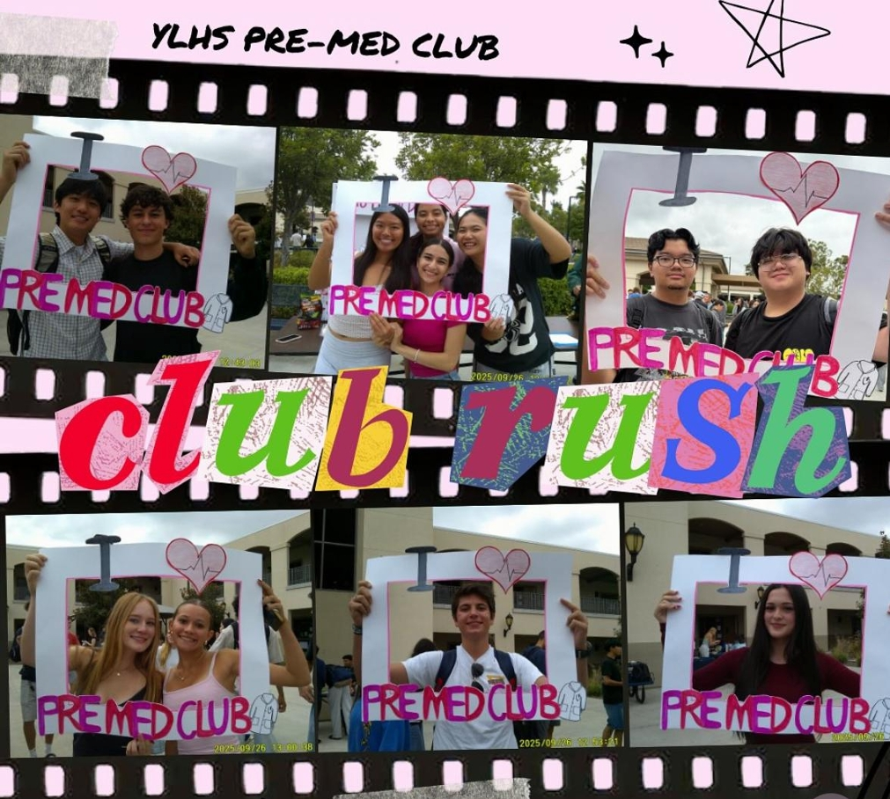
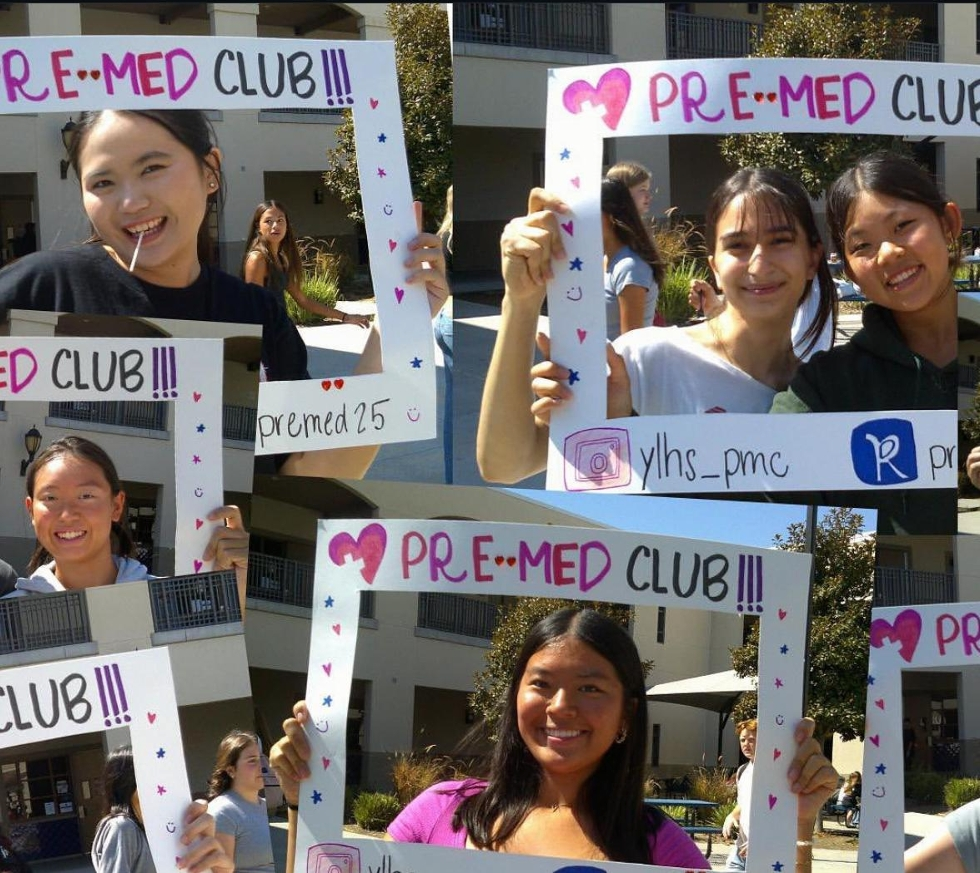
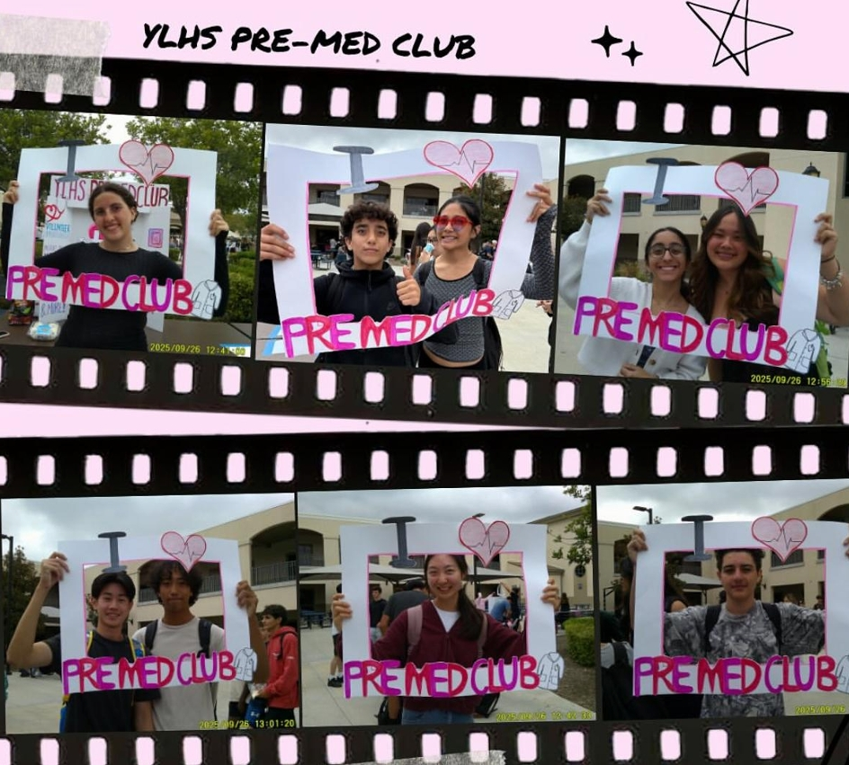
4.YLHS Applied Justice – Vice President & Co-Founder
As Vice President and Co-Founder, I advocate for social justice through legal studies and help lead the club’s activities to engage and educate students.
- Designed promotional posters and recruited over 100 members.
- Organized biweekly meetings, including preparing agendas and study materials.
- Studied legal cases and watched trials to explore real-world applications of social justice.
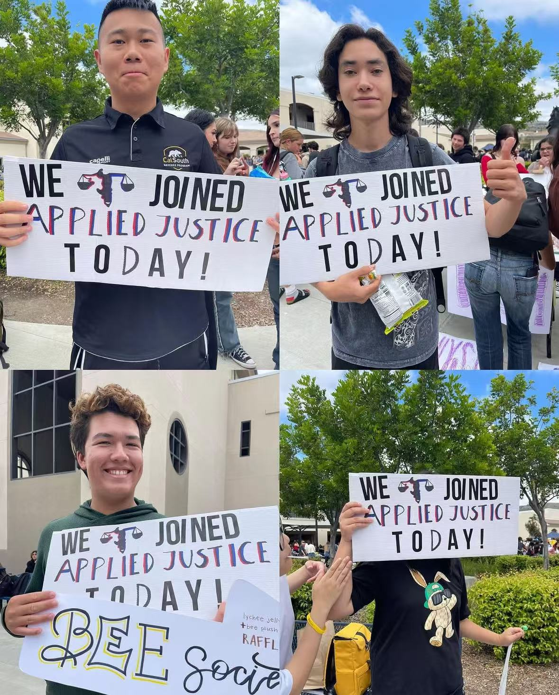
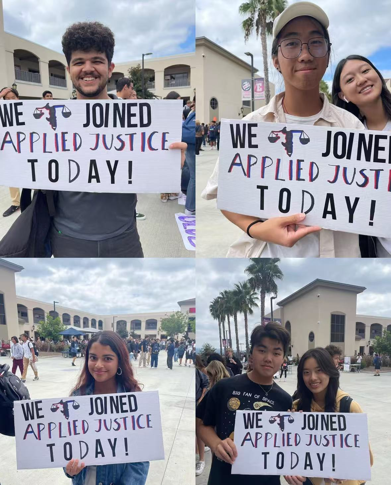
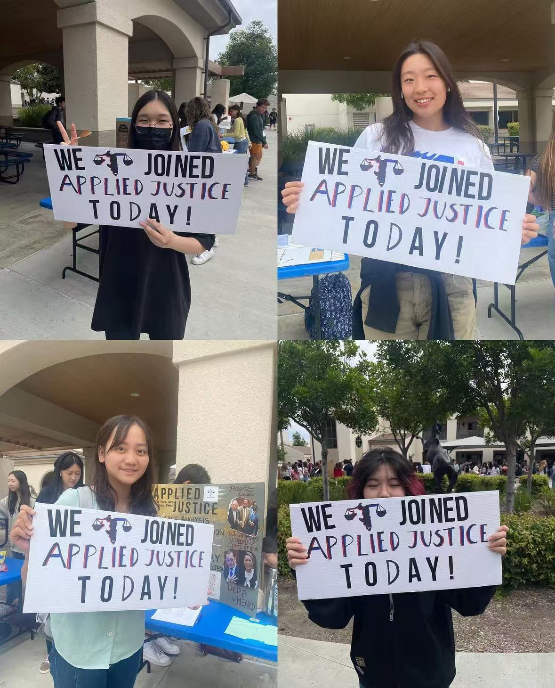
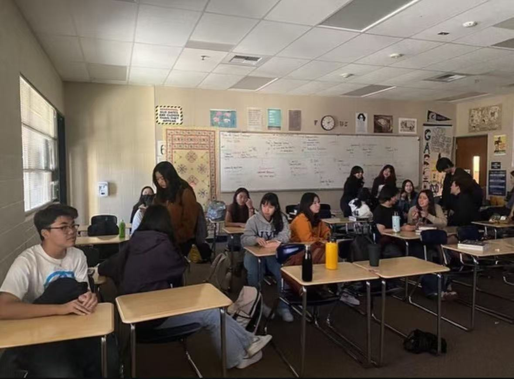